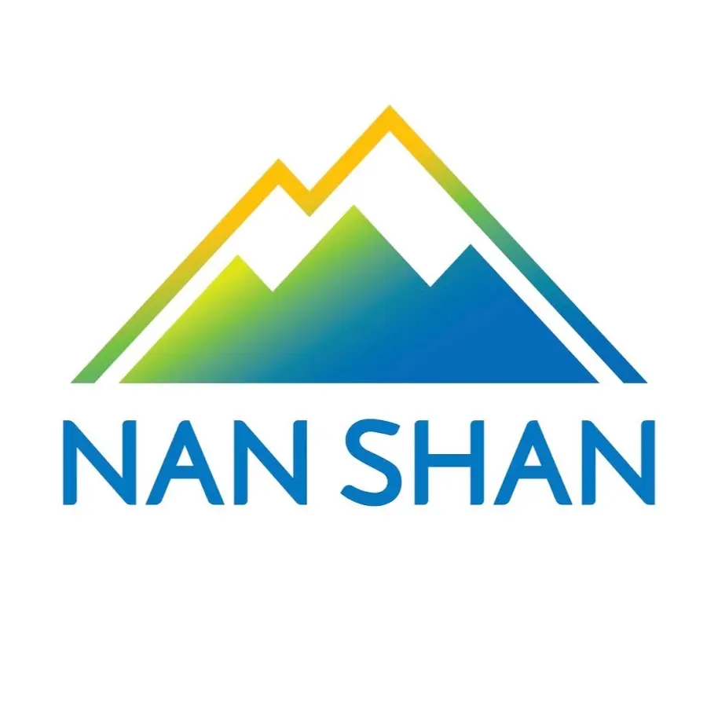
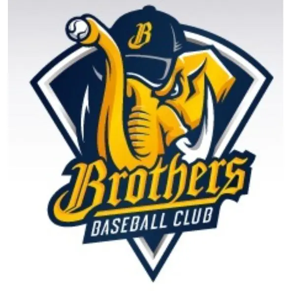
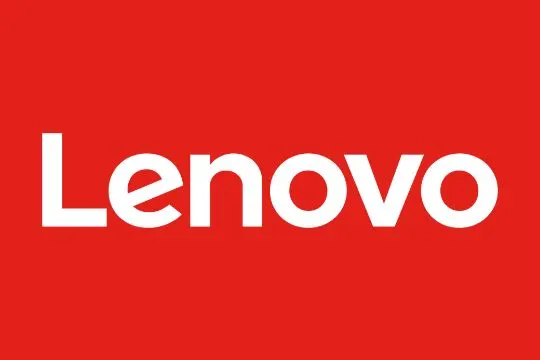
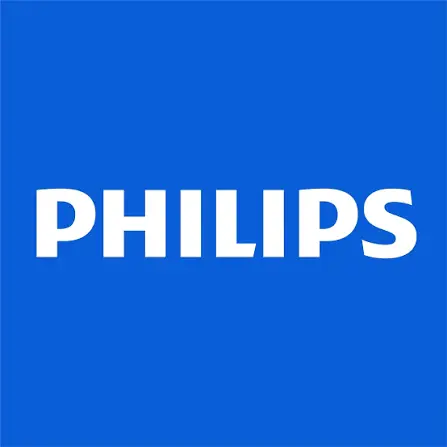

邀約者最常指名的三場
從三個精選講題，帶你的團隊把 AI 與數據變成可量化的獲利。
AI 轉型與政府補助
讓補助成為轉型的第一桶金——帶走一張「補助資源 × AI 導入」對照地圖，知道錢從哪來、第一步怎麼走。
AI 導入與精準獲利
把模糊直覺變成可量化的決策——用 AI 數據系統把人工作業自動化，讓每一個決策都對得上獲利數字。
二代接班與傳統轉型
用數位轉型接住下一個十年——帶走一套接班數位化的階段路線圖，知道哪些先做、哪些先別碰。
他們已經把關鍵決策交給數據
服務過的產業龍頭橫跨金融、汽車、科技、電商、運動娛樂——包括裕隆集團、南山人壽、Chubb 安達人壽、匯豐汽車、中信兄弟、Lenovo、Philips、天貓等。




Merkle Taiwan 體驗科學副總經理｜台大工業工程碩士 × 美國德州大學電腦工程碩士｜Meta/Google 認證講師｜ICF 認證專業教練｜《流量的秘密》《AI 轉型的溫度》共同作者
每週一則，把數據決策的思路帶著走
訂閱電子報，收到 AI 導入、數據決策與數位轉型的實戰觀點——寫給要做決定的人，不是給看熱鬧的人。